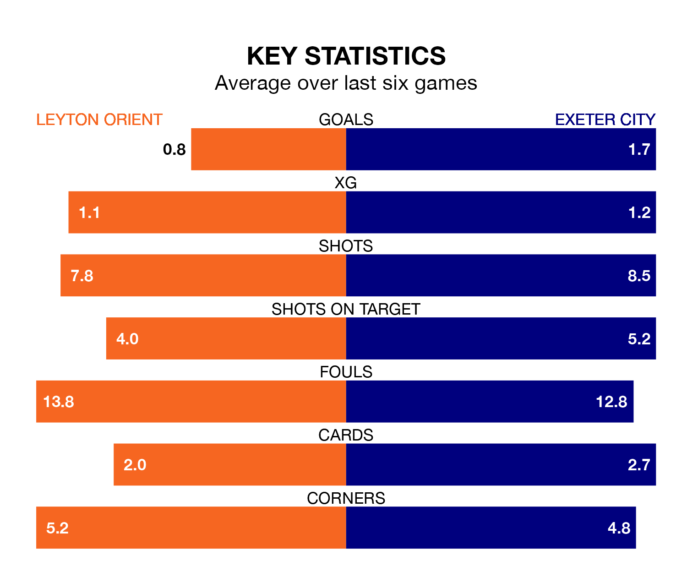

Exeter City face Leyton Orient on Tuesday seeking to protect their long unbeaten run in EFL League One.
Exeter are unbeaten in six, with four wins and two draws, ahead of the 7.45pm kick-off.
They face an Orient team who have won two and drawn one over the same number of games.
In the last 10 years, Orient and Exeter have played each other on 10 occasions. Orient won two of them, Exeter six, and they drew twice.
On average, Orient scored 0.9 goals and Exeter 2.1 in those matches.
Their last meeting was on September 9, when Orient won 2-1 away.
With 37 goals in 42 games so far this season, Exeter are scoring at below the league average rate with 0.9 goals per game. And they are conceding at an average rate, letting in 54 goals at a rate of 1.3 per game.
Orient are also below average scorers, with 1.1 goals per game, compared to a league average of 1.3. They have also conceded 1.1 goals per game.
The home team are 10th in the table after 42 games, of which they have won 17 and drawn 10, earning 61 points.
City are three places behind Orient in 13th, with 15 wins and nine draws putting them on 54 points.
Orient's last match was on Saturday, a 3-1 win against Cheltenham Town, with Ethan Stuart William Galbraith, Oliver O'Neill and Ruel Sotiriou getting the goals for Orient.
Exeter beat Stevenage 1-0 last time out, also on Saturday, with Reece Cole on the scoresheet.
Tuesday's match will be refereed by Scott Jackson, who has taken charge of eight EFL League One games so far this season, issuing no red cards and booking 25 players. He has not awarded any penalties.
The last Orient game Jackson refereed was a 1-0 away win against Port Vale on February 6. His last Exeter match was their 1-0 loss at home against Barnsley on October 7.
Updated: 14:47 (UTC), 09/04/24